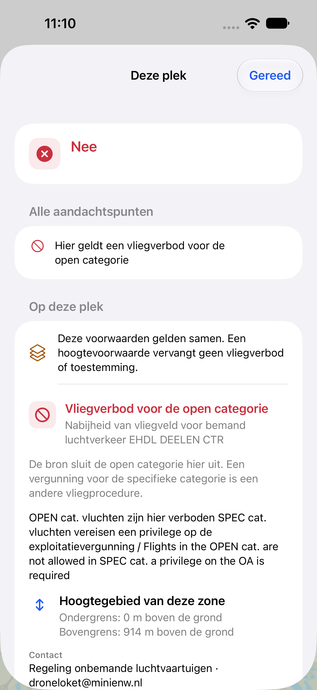
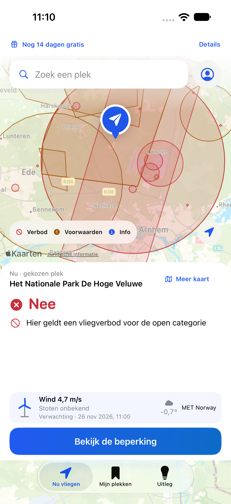

Begrijp de beperking.
Lees waarom een zone opvalt en welke voorwaarden erbij horen. De oorspronkelijke broninformatie blijft erbij, zodat je kunt zien waarop de uitleg is gebaseerd.

iPhone en Android · app in Nederlands en Engels
Je vliegplek, de voorwaarden voor je drone en het weer bij elkaar.
Android 1.0.6 is goedgekeurd en wordt uitgerold; iPhone 1.0.6 wacht op Apple-beoordeling. Het nieuwe gratis aanbod geldt vanaf 1.0.6; de oudere iPhone-winkelversie kan de oude proefperiode tonen.
Eén land. Gratis.
Met advertenties, zonder aankoop.
Alle ondersteunde landen zonder advertenties? Premium is optioneel: Een maand- of jaarabonnement. De app toont de actuele winkelprijs vóór je aankoop. Het jaarbedrag betaal je vooraf. Een gekocht abonnement verlengt automatisch totdat je opzegt. Bekijk gratis en Premium.

Van je plek naar je volgende stap
Gebruik je locatie, zoek een adres of kies een punt op de kaart.
Bekijk de beschikbare zones en voorwaarden voor jouw drone, met wind en weer erbij.
Lees de reden en oorspronkelijke voorwaarden in de app. Ontbrekende informatie blijft zichtbaar.
Kijk verder dan een kleur
Lees waarom een zone opvalt en welke voorwaarden erbij horen. De oorspronkelijke broninformatie blijft erbij, zodat je kunt zien waarop de uitleg is gebaseerd.

Bekijk wind, temperatuur en beschikbare neerslaggegevens bij je gekozen plek. Je ziet het tijdstip en de bron; als een waarde ontbreekt, blijft dat zichtbaar.

Historische appbeelden: iPhone 1.0.4, 26 november 2026. De proefperiode in deze beelden hoort bij die versie; de gratis/Premiumkeuze van versie 1.0.6 verschilt. Beschikbare waarden en je eigen vliegplek kunnen verschillen.
Begin met jouw vliegplek
Je plekcheck staat voorop. Kies eenmalig je vaste thuisland gratis met advertenties, of gebruik alle ondersteunde landen met Premium zonder advertenties.
Gratis
Geen aankoop of nieuwe proefperiode om te beginnen. Zonder bevestigde aankoop ontstaat geen automatische betaling.
Premium
Het jaarbedrag betaal je vooraf. Alleen een abonnement dat je zelf koopt verlengt automatisch totdat je het in de winkel opzegt. Controleer de winkelprijs voordat je bevestigt.
Je betaalkeuze verandert de vliegvoorwaarden, ontbrekende brongegevens of benodigde toestemming niet. Heb je al een proefperiode of abonnement?
Weet wat jouw app ondersteunt
iPhone: bronkaarten voor Nederland, België, Duitsland, Denemarken, Finland, Frankrijk, Luxemburg, Portugal, Spanje, Zweden en Zwitserland.
Android: bronkaarten voor Nederland, België en Duitsland.
De bronnen en aanvullende checks verschillen per land. De landengids is geen lijst met volledig aangesloten kaarten. Zwitserland is geen EU-land. Beschikbaarheid in de winkel is iets anders dan kaartdekking: de uitgave blijft gericht op Nederland en België.
FAQ
De kaart, voorwaarden en het weer voor één ondersteund land. Je hoeft geen abonnement te kopen om te beginnen. De gratis versie bevat advertenties.
Je kiest eenmalig je vaste thuisland uit de landen die jouw versie ondersteunt. In dat land gebruik je kaart, voorwaarden en weer gratis met advertenties. Voor andere ondersteunde landen kies je Premium.
Je gebruikt alle bronlanden die jouw iPhone- of Android-versie ondersteunt, zonder advertenties. Je kiest een maand- of jaarabonnement. De app toont de actuele winkelprijs vóór je aankoop; het jaarbedrag betaal je vooraf. De gratis versie blijft een bruikbare plekcheck voor één land.
Een nog geldige proefperiode die al vóór deze update was gestart, behoudt de resterende tijd met alle ondersteunde landen en zonder advertenties. Daarna kun je verder met één gratis land met advertenties. Er ontstaat geen automatische betaling. Nieuwe installaties van versie 1.0.6 beginnen direct met de gratis versie, zonder nieuwe proefperiode.
Ja. Een geldig abonnement blijft toegang geven tot alle op jouw platform ondersteunde bronlanden, zonder advertenties. Beheer je abonnement bij Apple of Google Play. De winkel toont de prijs, verlengdatum en eventuele wijzigingen die voor jouw abonnement gelden.
De gratis versie gebruikt een banner via Google AdMob en vraagt niet-gepersonaliseerde advertenties aan. Je kunt je privacykeuzes beheren in de app. Afhankelijk van je keuze en de beschikbaarheid kunnen beperkte of geen advertenties worden getoond. De plekcheck en het weer blijven bruikbaar.
Privacy
Geen apart DroneGlance-account. Je profiel en bewaarde plekken staan op je toestel. Aanbieders voor kaart, zoeken, weer, aankopen en advertenties verwerken wel internetverzoeken en technische gegevens.
De gratis versie vraagt niet-gepersonaliseerde advertenties aan via Google AdMob. Beheer je advertentieprivacy in de app. Afhankelijk van je keuze en beschikbaarheid verschijnen beperkte of geen advertenties. Je gratis land blijft bruikbaar.
Privacy iOS ↗DroneGlance
Eén ondersteund land gratis met advertenties. Voor iPhone en Android, met Nederlands en Engels in versie 1.0.6. Winkeluitgave: Nederland en België.